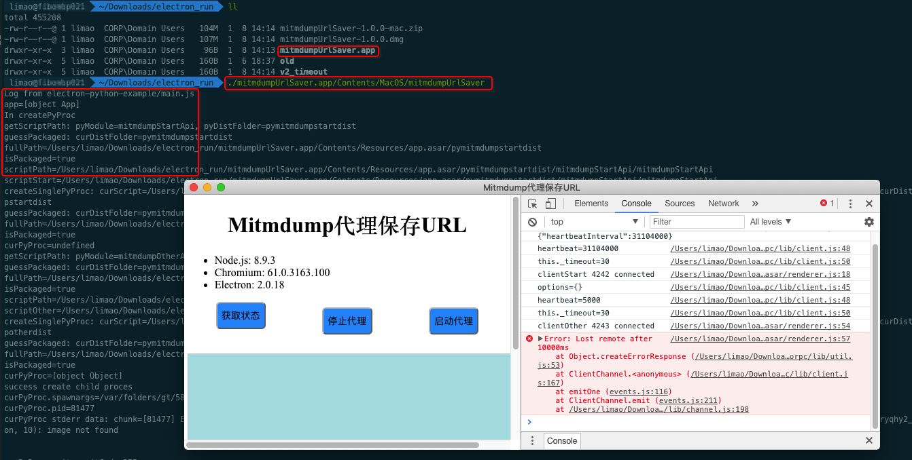

Log日志
此处整理一些和log日志，print，console.log等相关的内容：
让main.js即js输出log日志文件到当前文件夹
文件：electron-python-example/main.js
const path = require('path')
let logFilename = path.join(__dirname, "main_js.log")
let fs = require('fs');
let util = require('util');
var logFile = fs.createWriteStream(logFilename, { flags: 'a' });
// Or 'w' to truncate the file every time the process starts.
var logStdout = process.stdout;
console.log = function () {
logFile.write(util.format.apply(null, arguments) + '\n');
logStdout.write(util.format.apply(null, arguments) + '\n');
}
console.error = console.log;
实现了之后的console.log：
console.log("main.js: __dirname=%s", __dirname)
可以同时输出到：
- console终端
- log文件
让main.js中的console.log输出到Electron的devTool中的console的log中
- 背景：
此处已有：
文件：electron-python-example/main.js
...
const createWindow = () => {
mainWindow = new BrowserWindow(
{
// width: 800,
// height: 600,
width: 1024,
height: 768,
// transparent: true,
webPreferences: {
nodeIntegration: true,
}
}
)
mainWindow.loadURL(require('url').format({
pathname: path.join(__dirname, 'index.html'),
protocol: 'file:',
slashes: true
}))
mainWindow.webContents.openDevTools()
mainWindow.on('closed', () => {
mainWindow = null
})
}
和 文件：electron-python-example/renderer.js
其中
文件：electron-python-example/index.html
。。。
<script>
require('./renderer.js')
</script>
</html>
可见：index.html中引用了renderer.js
去
./node_modules/.bin/electron .
调试electron时，有2种log：
- Electron界面中，右边可以看到html调用的
renderer.js输出的log- 原因：由于
main.js中的mainWindow.webContents.openDevTools()打开了DevTools
- 原因：由于
- 调试终端中：可以看到
main.js的log- 因为是在VSCode的终端中运行的
而mac中打包后的Electron的app中，只能看到 Electron界面中（render.js打印）的log，看不到main.js中的log：
而此处希望，对于production生产模式，即mac中打包electron后得到的app文件 mitmdumpUrlSaver.app在其运行时也可以看到main.js中的log，以便于后续调试，当出错时找到原因。
- 最终方案：
从界面中启动打包后的app内部的二进制文件，比如我的mitmdumpUrlSaver.app
对应内部的二进制文件
./mitmdumpUrlSaver.app/Contents/MacOS/mitmdumpUrlSaver
即可启动终端，运行此处的APP。终端中可以看到我们要的main.js中的log

- 进一步：如果想要在当前终端中看到Electron的render.js中的log
则可以启动之前加上环境变量：
export ELECTRON_ENABLE_LOGGING=true
./mitmdumpUrlSaver.app/Contents/MacOS/mitmdumpUrlSaver
注：可以用echo确认变量是否已设置成功
echo $ELECTRON_ENABLE_LOGGING
true
然后就也能看到render.js中的log了：
相关说明：
此处2个js文件，对应着2个js线程：
main.js->node.js的主线程- -》
main.js中console.log输出到的地方
- -》
renderer.js-> 显示界面的渲染线程 = Electron界面所在的线程- -》（调试时）Electron界面开启了
DevTools后右边就能看到console.log输出的内容了
- -》（调试时）Electron界面开启了